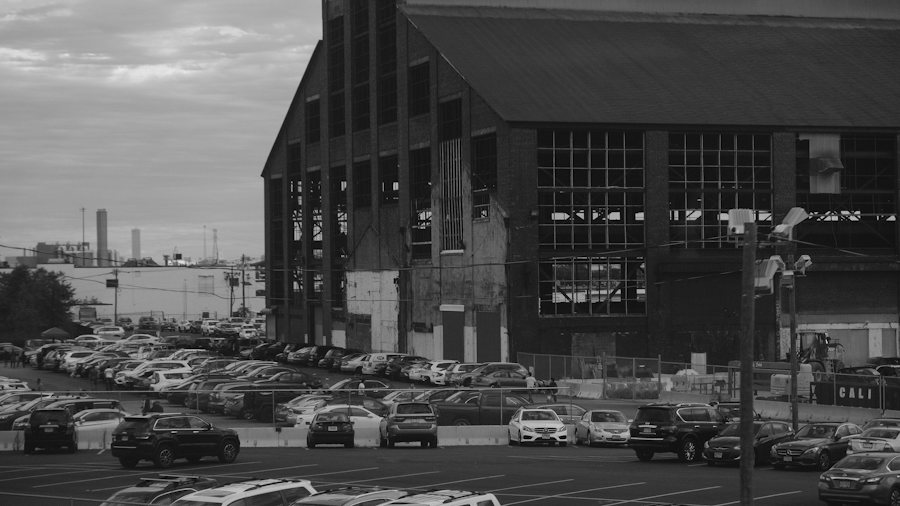
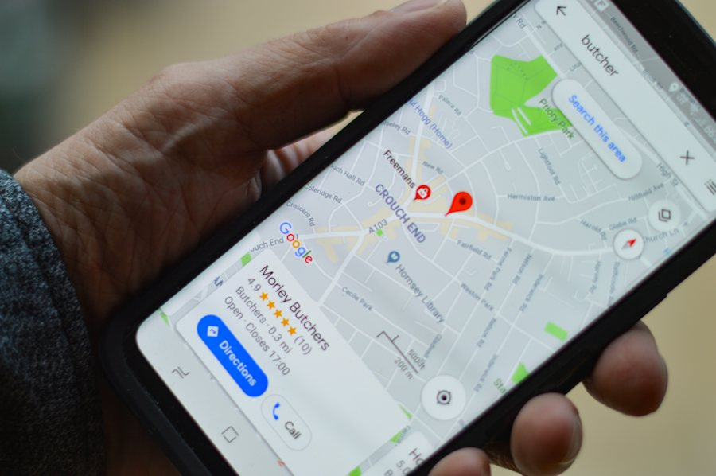
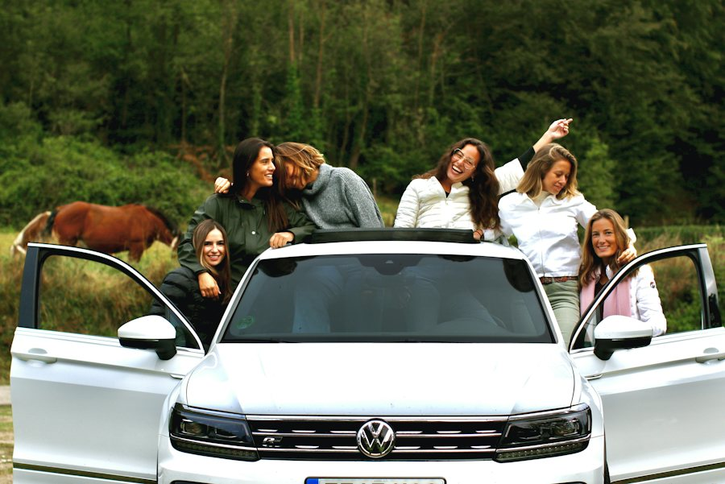
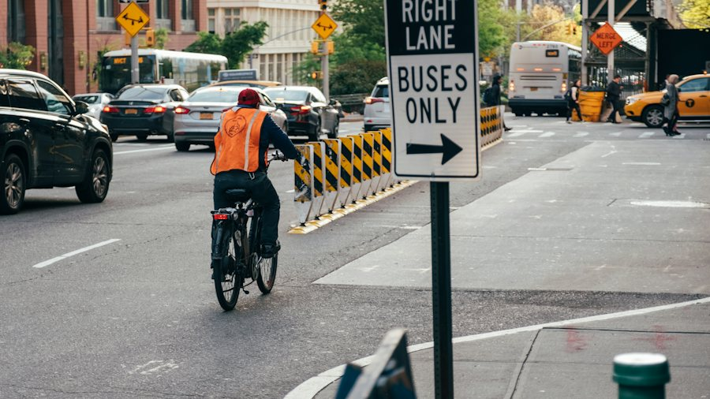

Ficha de sesión · S06 · solo docente
| § | Bloque | Min |
|---|---|---|
| 1 | Warm-up · Commute Board | 4 |
| 2 | Vocabulary · The Impostor Collocation | 7 |
| 3 | Grammar · stance + comparison · Forbidden Form | 11 |
| 4 | Listening · Silent Ending | 8 |
| 5 | Speaking · Escalation Debate (setup 2 · 3 debates 12 · facts 3 · 12 preguntas 5) | 22 |
| 6 | Wrap-up · commute card + exit | 8 |
| Total | 60 |
Warm-up · The Commute Board
Teacher notes · §1 Warm-up
Pedagógica
- Tablero de salidas con 4 modos reales (tiempos y costos ficticios, realistas para el Bajío). El alumno lee, escucha y marca «I use this». Sin marco gramatical todavía: tú modelas «The bus is cheaper than the car» al responderle.
- Repaso activo de Elemental 2/3 (comparativos básicos) y de S5 («They said… but I think…»). No expliques: reacciona, pide el «Why?» y anota qué comparativos usa solo.
- Grupo: cuenta cuántos usan cada modo (el tablero es individual; el conteo es oral). 1:1: contradice su elección («I think the car is better») para provocar razón + dato. Máx. 4 min.
Engagement
- Pregunta real: «¿Cuánto tardas y cuánto pagas realmente al día?» (el dato propio es la mejor materia prima).
- Cierra en voz alta: «Today I can compare two ways to get to work.»
Crecimiento
- «In 56 minutes you will recommend a commute for a new coworker — and accept one point from the other side.»
- Anota los modos que nadie usa: se reciclan como opciones en los debates.
Vocabulary · 10 collocations to travel
One phrase in each set is FALSE. Catch it. Say why.
Caught 0 / 51. Read the four phrases. 2. Tap the impostor — it sounds right in Spanish, but it is not English. 3. Say WHY it is false and use one real phrase in a sentence.
Teacher notes · §2 Vocabulary
Pedagógica
- The Impostor Collocation (IMPOSTOR): cada set tiene 3 collocations reales y 1 impostor que es calco literal del español (drive a bike, lose the bus). Punto por cazarla; punto doble si explica POR QUÉ suena falsa: el punto se gana porque el alumno PRODUCE la explicación y la oración, no por rapidez. En grupo, debaten en equipo; en 1:1 tú defiendes el impostor («For me it sounds OK») y el alumno te corrige.
- Primero el muro (≈2 min): toca, oye la frase y el ejemplo y repite 2 veces. Pronunciación: fare /feə(r)/, ride /raɪd/, rush hour /ˈrʌʃ aʊə/, parking /ˈpɑːkɪŋ/.
- Regla 3-3-3 y cierre: reglas en pantalla (≤3 min). Al final di en voz alta: «We caught __ of 5 impostors.» Los impostores NO son plausibles por azar: son calcos reales de errores frecuentes de hablantes de español.
Engagement
- Pregunta: «¿Qué frase de la lista usarías mañana para contar tu traslado?»
- Rotación: VOC-01 es nueva en este nivel; ninguna dinámica de VOC se repite en 6 sesiones.
Crecimiento
- Estas 10 collocations se reutilizan en el listening (§4) y en los debates (§5).
- Anota qué calcos cayeron más: reciclarlos en S7 como «error de la semana».
Grammar · my stance + a comparison
Make your opinion stronger: compare and give a fact
A · Source
What others say (S5).
B · Stance + comparison
I think + X is adjective-er than Y.
C · A fact
A number is stronger than “it is good”.
| Adjective | Comparison |
|---|---|
| cheap · fast · short | cheaper · faster · shorter + than |
| comfortable · expensive | more comfortable · more expensive + than |
| good · bad | better · worse + than |
Model: They said the bus is cheaper, but I think the carpool is better than the bus because it takes 35 minutes.
¿Qué es? Una forma de apoyar tu opinión comparando dos opciones: X is cheaper than Y. Los comparativos ya los conoces; hoy los usas para recomendar.
¿Cómo se usa? Adjetivo corto + -er than (cheaper than); adjetivo largo: more … than; irregulares: better, worse.
¿Para qué hoy? Para que tu recomendación tenga un dato que el otro pueda revisar.
Cuidado: «more cheap», «badder» y «better that» no existen: cheaper than, worse than, better than.
Choose the correct form
Read the data → choose the true sentence → say your own
Said 0 / 4
Compare two things. Three chips each. Don't say the banned words.
1. Talk about the prompt. 2. Banned: very good bad. 3. If your partner hears one, you lose a chip. Clean sentences count; chips left = winner.
Teacher notes · §3 Grammar
Pedagógica
- UN solo punto de lengua: They said X is cheaper, but I think Y is better than X because…. Los comparativos son Tier 02 reciclado (no se enseñan): solo se activan al servicio de la postura. Explicación docente ≤5 min (Recap en pantalla). Práctica mecánica A (2 min) = ≤1/3 del bloque; B es meaningful (el alumno decide qué decir); Forbidden Form es comunicativa.
- Forbidden Form (ELIMINACIÓN): durante 4 min están prohibidas very, good y bad (las formas cómodas). Cada jugador tiene 3 fichas; el compañero (o tú en 1:1) pulsa «Caught» al oír una. Gana quien conserva más fichas, y cada oración limpia suma: el punto es por PRODUCIR, no por rapidez. Si alguien se queda sin fichas se declara «out» y el otro sigue.
- Límite de nivel: sin superlativos largos, sin hipótesis («If I took the bus…») y sin negociación. Los datos son números simples.
- Errores previstos: «more cheap», «badder», «better that», «the bus is more fast». Anótalos sin nombres.
Engagement
- «Before you say very good, find a number or a comparison.»
- Cierra en voz alta: «We lost __ chips. The winner is __.»
Crecimiento
- Este marco (postura + comparación + dato) sostiene los debates de §5 y el quiz de S8.
- Anota los 3 errores de comparativos más repetidos: serán material de S8 (Sentence Auction).
Listening · Silent Ending

Anil and Ellie compare their commutes. The audio STOPS before the end. First say YOUR ending. Then bet on it. Then hear the real one.
Final audio: MP3 recorded with ElevenLabs.
Anil: “Do you want to try it for one week?” … STOP. What does Ellie say?
1. Say your own ending out loud (1–2 sentences). 2. Choose the ending that is most logical. 3. Bet 1, 2 or 3 chips. A correct bet wins chips; the bet only counts after you SAY your ending.
What did you hear?
Teacher notes · §4 Listening
Pedagógica
- Silent Ending (APUESTA): el audio se corta antes del cierre. Guion de 145 palabras (rango B1 120–200); Anil habla inglés indio (no nativo) y Ellie inglés canadiense. Marca [PARA GRABAR]: sin MP3 suena la voz del navegador.
- Ciclo: (1) escuchan hasta el corte; (2) dicen SU final en voz alta (producción); (3) eligen el final más lógico y apuestan 1–3 fichas; (4) se revela el final real; (5) Task 2: preguntas de detalle con segunda escucha. El final real es predecible por lógica, no por azar: Ellie propuso el aventón.
- Answer key: forty minutes · one hundred pesos every day · seven fifteen · before rush hour · a shared ride is better than the bus · try it for one week. Final real: «Yes, let's try it for one week. I will bring coffee on Friday.»
- Cumple: ≥3 elementos de léxico (get stuck in traffic · take the bus · share a ride · arrive on time) y la forma central ≥2 veces («They said… but I think…», «I think a shared ride is better than the bus, because…») sin subrayarla.
Engagement
- Compara su final con el real: «What was different? Was yours logical?»
- Cierra en voz alta: «My ending was __. The real ending was __.»
Crecimiento
- Predecir el final es la base de escuchar mensajes completos en Block 2.
- Anota quién usó una comparación en su propio final sin ayuda.
Speaking · Escalation Debate

Recommend how Sam gets to the office — and accept one point.
Level 1: opinion Level 2: + a fact Level 3: + “The ___ is ___ than the ___, but I think…”
Group: pairs. Player A defends the first option, Player B the second. Groups of 4: two pairs, one debate each.
1:1: you are Player A, the teacher is Player B. Same levels.
| Option | Cost | Time | Problem |
|---|---|---|---|
| BUS | 18 pesos | 50 min | no parking needed |
| CAR | 120 pesos | 30 min | stuck in traffic at 8:00 |
| BIKE | 0 pesos | 40 min | arrive tired when it is hot |
| CARPOOL | 60 pesos | 35 min | leaves at 7:15 exactly |
| SHUTTLE | 0 pesos | 55 min | only 2 times a day |
One fact changes. Say your new recommendation.
Flips 0 / 212 questions · always 2 follow-ups

Teacher notes · §5 Speaking
Pedagógica
- Escalation Debate (ESCALADA): tres niveles sobre la MISMA pregunta: opinión → opinión con dato → opinión con concesión al otro lado. SOLO puntúa el nivel 3 (los niveles 1–2 son escalera, el XP del nivel 3 es el único). Cada nivel se desbloquea al terminar el anterior. Los lados son abiertos (A/B), no secretos: hay que defender la opción asignada.
- Tiempos: 45 s / 60 s / 90 s con 30 s de preparación en silencio antes del nivel 1; después se habla sin notas. 3 debates (≈4 min c/u). Concesión modelo: «The car is faster than the bus, but I think the bus is better because it costs 18 pesos.» Anota errores sin nombres.
- Fact flip (3 min): cambia un dato y deben recomendar de nuevo con el número nuevo: evidencia de transferencia del temario (se cambia un dato, plazo o persona).
- Preguntas (5 min): elige 4–5 de las 12; todas con 2 follow-ups; nunca respuesta de una palabra. Setup ≤2 min (reglas en pantalla).
Engagement
- Anuncia el resultado: «We found __ of 9 moves and __ of 2 flips. Mission complete!»
- Pregunta final: «Who made the best concession? What did they say?»
Crecimiento
- S7 sube la exigencia: pasar de una postura a una actualización completa de 2 minutos.
- Registra: movimientos del nivel 3, fichas del Forbidden Form, apuesta del listening y qué concesión costó más.
Wrap-up · Better the second time
Pick an option, a comparison and a fact — then say it
Said 0✓ Success
↑ Upgrade
✎ Repair
↻ Next use
Write 5 lines about your real commute: source · comparison · fact · plan.
60 seconds · 5 questions
Today I can…
You can recommend an option with a comparison and a fact.
Homework: write 5 lines about your REAL commute: They said… but I think… is better than… because… So, the plan is… Next: Session 7.
Teacher notes · §6 Wrap-up
Pedagógica
- Máx. 2 aciertos y 3 correcciones de alto valor (usa los errores anotados sin nombres). La commute card de arriba cierra con una oración propia dicha en voz alta.
- Tarea: 5 líneas sobre su traslado real. Se revisa al inicio de S7.
Engagement
- Declaración final: «Today I can recommend an option with a comparison and a fact.»
- Compara con §1: «Minute 1: you tapped a row. Minute 58: you accept a point and still recommend.»
Crecimiento
- Registra: movimientos nivel 3, fichas conservadas, impostores cazados, apuesta del listening.
- «Next session: a full two-minute update with three clear parts.»